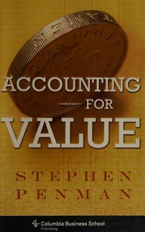

斯蒂芬·彭曼（Stephen Penman）是哥伦比亚大学商学院乔治·O·梅讲席教授（George O. May Professor），专注于财务报表分析、权益估值与会计学理论研究，是当代将会计学与投资估值进行系统性整合的最重要学者之一。《Accounting for Value》于2011年由哥伦比亚大学出版社出版，是彭曼将其数十年学术研究提炼为一本面向投资者的简明著作的成果。该书的核心论点直截了当：估值本质上是一个会计问题，而非一个预测问题。
彭曼在书中对当代金融学的两大主流估值工具——资本资产定价模型（CAPM）和现金流折现模型（DCF）——提出了系统性批评。他认为CAPM所依赖的贝塔系数（beta）并不能可靠地衡量风险，而DCF模型则要求投资者对遥远未来的现金流进行精确预测，这在实践中往往沦为"用精确的数学包装不精确的猜测"。彭曼提出的替代方案是回归会计学的基本功能：锚定于已知的信息——账面价值和当期盈利——然后仅对那些确实可以合理推断的增量信息进行有限的外推。他将这种方法称为"锚定与调整"（anchoring and adjustment），其哲学根基与本杰明·格雷厄姆的安全边际思想一脉相承。书中还重新审视了"价值投资"与"成长投资"的传统二分法，认为两者的区别并不在于投资风格的差异，而在于投资者如何对待会计信息与市场预期之间的关系。
该书出版后在学术界和价值投资圈中引发了关注，但由于其学术性较强，并未获得广泛的大众传播。彭曼的论点在逻辑上与沃伦·巴菲特多次强调的"不要为成长付出过高价格"以及查理·芒格所说的"好的投资就是好的会计"形成了呼应，尽管巴菲特和芒格并未直接推荐此书。该书目前没有已确认的中文译本。
对于具有一定财务基础的投资者，《Accounting for Value》提供了一套将会计信息转化为估值判断的严谨框架。彭曼的核心洞见在于：投资者不需要预测未来，而需要评估市场价格中已经隐含了多少对未来的预期，然后判断这些预期是否合理。这种"逆向工程"式的估值思维——从价格出发，反推市场假设，再用会计数据验证——与格雷厄姆学派的精神高度一致。该书不适合会计零基础的读者，但对于已经能够阅读财务报表、希望理解估值的会计学根基的投资者，它是一本难得的桥梁之作。